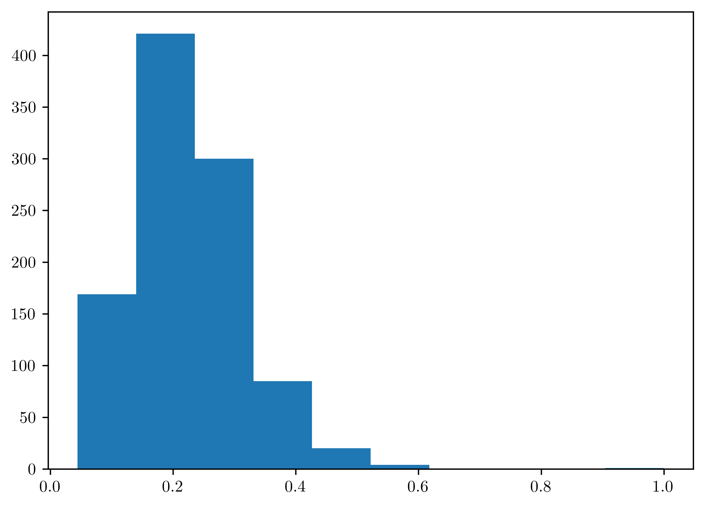

%matplotlib inline
import sys # system information
import matplotlib # plotting
import scipy # scientific computing
import random
import pandas as pd # data managing
from scipy.special import comb
from scipy import stats as st
from scipy.special import gamma
import numpy as np
import matplotlib.pyplot as plt
from itertools import permutations
# Matplotlib setting
plt.rcParams['text.usetex'] = True
matplotlib.rcParams['figure.dpi']= 300
np.random.seed(20220928) # Consistent random effect10 Homework 6
10.1 Description
- Course: STAT638, 2022 Fall
Read Hoff (2009, ch. 6). Then, do Hoff (2009, Exercise 6.1). You may assume that \(\theta\) and are a priori independent, and that \(Y_A\) and \(Y_B\) are conditionally independent given \(\theta\) and \(\gamma\).
10.2 Computational Enviromnent Setup
10.2.1 Third-party libraries
10.2.2 Version
print(sys.version)
print(matplotlib.__version__)
print(scipy.__version__)
print(np.__version__)
print(pd.__version__)3.9.12 (main, Apr 5 2022, 01:52:34)
[Clang 12.0.0 ]
3.6.2
1.9.3
1.23.4
1.5.110.3 Problem 6.1
Poisson population comparisons: Let’s reconsider the number of children data of Exercise 4.8. We’ll assume Poisson sampling models for the two groups as before, but now we’ll parameterize \(\theta_A\) and \(\theta_B\) as \(\theta_A = \theta, \theta_B = \theta\times \gamma\). In the parameterization, \(\gamma\) represents the relative rate \(\frac{\theta_B}{\theta_A}\). Let \(\theta\sim gamma(a_\theta, b_\theta)\) and let \(\gamma\sim gamma(a_\gamma, b_\gamma)\).
10.3.1 (a)
Are \(\theta_A\) and \(\theta_B\) independent or dependent under this prior distribution? In what situations is such a joint prior distribution justified?
\[\begin{align} Cov(\theta_A, \theta_B)% &= E[\theta_A\theta_B] - E[\theta_A]E[\theta_B]\\ &= E[\theta \theta\gamma] - E[\theta]E[\theta\gamma]\\ &= E[\theta^2 \gamma] - E[\theta]E[\theta\gamma]\\ &= E[\theta^2]E[\gamma] - E[\theta]^2 E[\gamma]\\ &= E[\gamma](E[\theta^2] - E[\theta]^2)\\ &= E[\gamma]Var[\theta]\\ &= \frac{a_{\gamma}}{b_{\gamma}}\frac{a_{\theta}}{b_{\theta}^2}\\ &\neq 0 \end{align}\]
Because \(Cov(\theta_A, \theta_B) > 0\), \(\theta_A\) and \(\theta_B\) are dependent.
10.3.2 (b)
Obtain the form of the full conditional distribution of \(\theta\) given \(\mathbb{y}_A\), \(\mathbb{y}_B\) and \(\gamma\).
\[\begin{align} p(\theta|y_A, y_B, \gamma)% &= \frac{p(y_A, y_B | \theta, \gamma) p(\theta|\gamma)}{p(y_A, y_B |\gamma)}\\ &= \frac{p(y_A|\theta,\gamma)p(y_B|\theta,\gamma)p(\theta|\gamma)}{p(y_A|\gamma)p(y_B|\gamma)}\\ &= \frac{p(y_A|\theta)p(y_B|\theta,\gamma)p(\theta)}{p(y_A)p(y_B|\gamma)}\\ &\propto p(y_A|\theta) p(y_B |\theta,\gamma)p(\theta)\\ &= \prod_{i=1}^{n_A} poisson(y_{Ai};\theta)\times \prod_{i=1}^{n_B} poisson(y_{Bi};\theta\gamma) \times gamma(\theta; a_{\theta}, b_{\theta})\\ &= \theta^{\sum_{i=1}^{n_A}y_{Ai}}e^{-n_A\theta} \times (\theta\gamma)^{\sum_{i=1}^{n_B}}e^{-n_B \theta\gamma} \times \theta^{a_{\theta}-1}e^{-b_{\theta}\theta}\\ &= \theta^{n_A\bar{y}_A}e^{-n_A \theta}\times (\theta\gamma)^{n_B\bar{y}_B}e^{-n_B\theta\gamma}\times \theta^{a_{\theta}-1}e^{-b_{\theta}\theta}\\ &= \theta^{n_A\bar{y}_A}e^{-n_A \theta}\times (\theta)^{n_B\bar{y}_B}e^{-n_B\theta\gamma}\times \theta^{a_{\theta}-1}e^{-b_{\theta}\theta}\\ &\propto \theta^{n_A\bar{y}_A + n_B\bar{y}_B + a_{\theta}-1}e^{-(n_A+n_B\gamma+b_{\theta})\theta} \end{align}\]
Therefore, \(p(\theta|y_A, y_B, \gamma) \sim gamma(\theta| n_A\bar{y}_A + n_B\bar{y}_B + a_\theta, n_A+ n_B\gamma + b_\theta)\)
10.3.3 (c)
Obtain the form of the full conditional distribution of \(\gamma\) given \(\mathbb{y}_A\), \(\mathbb{y}_{B}\) and \(\theta\).
\[\begin{align} p(\gamma | y_A, y_B, \theta)% &= \frac{p(y_A, y_B | \gamma, \theta)p(\gamma|\theta)}{p(y_A, y_B|\theta)}\\ &\propto p(y_A, y_B | \gamma, \theta)p(\gamma|\theta)\\ &= p(y_A|\gamma,\theta)p(y_B|\gamma,\theta)p(\gamma)\\ &= p(y_A|\theta)p(y_B|\gamma,\theta)p(\gamma)\\ &= \prod_{i=1}^{n_A}p(y_{Ai}|\theta) \prod_{i=1}^{n_B}p(y_{Bi}|\gamma,\theta)p(\gamma)\\ &= \theta^{s\bar{y}_A}e^{-n_A\theta}(\gamma\theta)^{n_B\bar{y}_B}e^{-n_B\gamma\theta}\gamma^{a_{\gamma}-1}e^{-b_{\gamma}\gamma}\\ &\propto \gamma^{n_B\bar{y}_B + a_\gamma -1 } e^{-n_A\theta-n_B\gamma\theta-b_\gamma\gamma}\\ &\propto \gamma^{n_B\bar{y}_B + a_\gamma -1 } e^{-(n_B\theta+b_\gamma)\gamma} \end{align}\]
Therefore, \(p(\gamma|y_A, y_B, \theta) \sim Gamma(n_B\bar{y}_B+a_\gamma, n_B\theta+b_\gamma)\)
10.3.4 (d)
Set \(a_{\theta} = 2\) and \(b_{\theta} =1\). Let \(a_{\gamma} = b_{\gamma} \in \{8,16,32,64,128\}\). For each of these five values, run a Gibbs sampler of at least \(5000\) iterations and obtain \(E[\theta_B - \theta_A| \mathbb{y}_A, \mathbb{y}_B]\). Describe the effects of the prior distribution for \(\gamma\) on the results.
class GibbSampler:
def __init__(self, a_t, b_t, a_g, b_g):
# Theta
self.a_t = 2
self.b_t = 1
# Gamma
self.a_g = a_g
self.b_g = b_g
self.theta = st.gamma(a_t, scale=1/b_t)
self.gamma = st.gamma(a_g, scale=1/b_g)
def expection(self, obs_func, dataA, dataB, n_sampling):
# Sample number
nA=len(dataA)
nB= len(dataB)
# Sample mean
mA = np.mean(dataA)
mB = np.mean(dataB)
thetaAs = np.zeros(n_sampling)
thetaBs = np.zeros(n_sampling)
# initial
theta_pre = st.gamma.rvs(self.a_t, scale=(self.b_t)**-1)
gamma_pre = st.gamma.rvs(self.a_g, scale=(self.b_g)**-1)
# Gibbs iteration
thetaAs[0] = theta_pre
thetaBs[0] = theta_pre*gamma_pre
for i in range(1,n_sampling):
# posterior
theta = st.gamma.rvs(nA*mA + nB*mB + self.a_t, scale= (nA + nB*gamma_pre + self.b_t)**-1)
theta_pre = theta
gamma = st.gamma.rvs(nB*mB + self.a_g, scale= (nB*theta_pre + self.b_g)**-1)
gamma_pre = gamma
# transformation
thetaAs[i] = theta
thetaBs[i] = theta*gamma
# Apply obs
obs = [obs_func(thetaAs[i], thetaBs[i]) for i in range(0,n_sampling)]
return np.mean(obs)
def obs_func(theta_A, theta_B):
return theta_B - theta_A
vals = np.array([8,16,32,64,128], dtype=float)
priors = [{\
"a_t": 2.0,
"b_t": 1.0,
"a_g": a,
"b_g": a
} for a in vals]
obs = {
"obs_func": obs_func,
"dataA": np.loadtxt("data/menchild30bach.dat"),
"dataB": np.loadtxt("data/menchild30nobach.dat"),
"n_sampling": 5000
}
exps = np.zeros(len(vals))
for i in range(0, len(vals)):
g = GibbSampler(**priors[i])
exps[i] = g.expection(**obs)
plt.plot(vals, exps, "-o",color="black");
plt.xlabel("$(a_{g}, b_{g})$");
plt.ylabel("$E[\\theta_{B}-\\theta_{A} | y_A, y_{B}]$");
10.4 Problem External
Also complete the following problem: We would like to study the survival times after patients receive a new cancer treatment. We observe the following survival times (in years) for \(6\) patients: \(3\), \(5\), \(x\), \(4\), \(x\), \(x\). Here, \(x\) denotes a censored observation, meaning that the respective patient survived for more than \(5\) years after the treatment (which is when the study ended). We consider the following model: \[\begin{equation} Y_i = \begin{cases} Z_i, & Z_i \leq c\\ \times, & Z_i > c \end{cases}, i = 1, \dots, n \end{equation}\] \[Z_1, \dots, Z_n |\theta \sim^{iid} Exponential(\theta)\] \[\theta\sim Gamma(a,b)\] We have \(a=1\), \(b=4\), \(c=5\), and \(n=6\).
10.4.1 (a)
Find the full-conditional distribution (FCD) of \(\theta\)
\[\begin{align} p(\theta|y, z)% &\propto \underbrace{p(y|\theta, z)}_{=1}p(\theta|z)\\ &= p(\theta|z)\\ &= \frac{p(z|\theta)p(\theta)}{p(z)}\\ &\propto p(z|\theta)p(\theta)\\ &= \prod_{i=1}^{n=6} p(z_i|\theta)p(\theta) \end{align}\]
- \(p(z_i|\theta) \propto \theta e^{-\theta z_i}\)
- \(p(\theta) \propto \theta^{a-1}e^{-b\theta}\)
\[\begin{align} p(\theta|y,z)% &= \left(\prod_{i=1}^{n=6} \theta e^{-\theta z_i}\right) \theta^{a-1}e^{-b\theta}\\ &= \theta^n e^{-\theta n \bar{z}}\theta^{a-1}e^{-b\theta}\\ &= \theta^{n+a-1}e^{-b\theta-\theta n \bar{z}}\\ &= \theta^{(n+a)-1}e^{-(b+n\bar{z})\theta} \end{align}\]
Therefore, \(\theta \sim gamma(n+a, b+n\bar{z})\) - where \(\bar{z} = \frac{1}{n}\sum_{i=1}^{n}z_i\)
10.4.2 (b)
Find the FCD of each \(Z_i\).
(Hint: For uncensored \(i\), this distribution will be a degenerate point mass; for censored \(i\), the resulting distribution will be a so-called truncated exponential distribution, which is proportional to a exponential density but constrained to lie in an interval. Each FCD does not depend on other Z’s)
\[\begin{align} p(z_i |\theta, y_i=x)% &= \theta e^{-\theta(z_i - c)} \end{align}\]
- \(p(z_i |\theta, y_i \text{ is uncensored }) = 1\)
\[\begin{align} p(z_i|\theta, y_i =x)% &= p(z_i=c+t | \theta, z_i>c)\\ &= \frac{p(z_i=c+t \cap z_i >c |\theta)}{p(z_i >c |\theta)}\\ &= \frac{p(z_i = c+ t |\theta)}{p(z_i>c|\theta)}\\ &= \frac{\theta e^{-\theta(c+t)}}{\int_{c}^{\infty}\theta e^{-\theta x}dx}\\ &= \theta e^{-\theta t}\\ &= \theta e^{-\theta (z_i - c)} \end{align}\]
This is the memoryless property of Exponential distribution1.
In summary,
\[\begin{equation} p(z_i|\theta, y_i) = \begin{cases} 1, & y = z_i\\ \theta e^{-\theta (z_i - c)} & y=x \end{cases} \end{equation}\]
10.4.3 (c)
Implement a Gibbs sampler that approximate the joint posterior of \(\theta\) and \(Z_1,\dots, Z_n\). (For example, you can use
truncdist::rtrunc(3, spec=exp, a=c, rate=theta)(Usestats.truncexpon) to sample from a truncated exponential in R.) Run the sampler for enough iterations such that each of the effective sample sizes for \(\theta\) and for the three censored \(Z_i\) are all greater than \(1000\). Provide the corresponding trace plots and discuss the mixing of the Markov chain.
- Both sampling converges to a range of stochastic state, that means the sampling is not stuck in certain region. The dependence between two subsequence steps is low.
data = np.array([3,5,4], dtype=float)
n = 6
n_cs = n - len(data)
a = 1
b = 4
c = 5
nSamp = 1000
thetas = np.zeros(nSamp)
zs = np.zeros((nSamp, n_cs))
thetas[0] = 1
zs[0] = [7,10,8]
for i in range(1, nSamp):
df = np.concatenate([data, zs[i-1]])
thetas[i] = st.gamma.rvs(n+a, scale= (b+np.sum(df))**-1)
zs[i] = st.expon.rvs(loc = c, scale= thetas[i], size =3)
# Plotting
fig, ax = plt.subplots(2,1)
ax[0].plot(thetas, "-", color="k")
ax[1].plot(zs[:,0], "-", color="k")
ax[1].set_xlabel("Iteration")
ax[0].set_ylabel("$\\theta$")
ax[1].set_ylabel("Z");- Truncated exponential distribution is sampled by
scipy.stats.truncexpon2
10.4.4 (d)
Obtain an approximate \(96\%\) posterior credible interval for \(\theta\) based on the samples from (c).
plt.hist(thetas);
invs = st.mstats.mquantiles(thetas, prob=[0.02, 0.98])
pd.DataFrame({"96% Credible Interval of theta": ["Left bound", "Right bound"], "Value": invs})| 96% Credible Interval of theta | Value | |
|---|---|---|
| 0 | Left bound | 0.085378 |
| 1 | Right bound | 0.444496 |